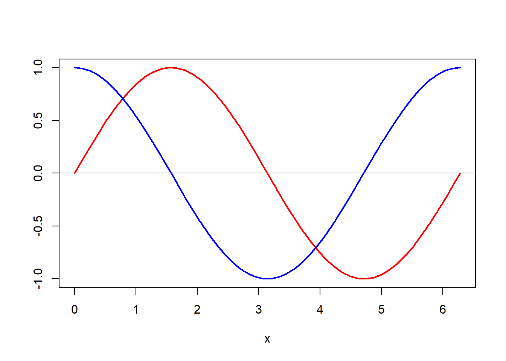

17 函数
17.1 函数基础
17.1.1 介绍
在现代的编程语言中使用自定义函数， 优点是代码复用、模块化设计。
如果一段程序需要在多处使用， 就应该将其写成一个函数， 然后在多处调用。 需要修改程序执行功能时， 仅需要修改函数而不需要修改各处调用。 如果不使用函数而是将相同的代码在多处复制粘贴， 修改时就需要修改多处， 很容易漏掉一处。
在编程时， 把编程任务分解成小的模块，每个模块用一个函数实现， 便于理解每个模块的作用， 降低了程序复杂性， 使得程序容易管理。
函数的自变量是只读的， 函数中定义的局部变量只在函数运行时起作用， 不会与外部或其它函数中同名变量混杂， 所以使用函数还减少在很长的程序中变量互相混淆出错的危险。
函数返回一个对象作为输出， 如果需要返回多个变量， 可以用列表进行包装。
17.1.2 函数定义
函数定义使用function关键字，一般格式为
函数名
<-function(形式参数表) 函数体
函数体是一个表达式或复合表达式（复合语句），
以复合表达式中最后一个表达式为返回值，
也可以用return(x)返回x的值。
如果函数需要返回多个结果，
可以打包在一个列表（list）中返回。
形式参数表相当于函数自变量，可以是空的，
形式参数可以有缺省值，
R的函数在调用时都可以用“形式参数名=实际参数”的格式输入自变量值。
下面的例子没有参数，仅画一个示例图：
f <- function() {
x <- seq(0, 2*pi, length=50)
y1 <- sin(x)
y2 <- cos(x)
plot(x, y1, type="l", lwd=2, col="red",
xlab="x", ylab="")
lines(x, y2, lwd=2, col="blue")
abline(h=0, col="gray")
}
f()
注意此自定义函数虽然没有参数， 但是在定义与调用时都不能省略圆括号。
自定义函数也可以是简单的一元函数， 与数学中一元函数基本相同，例如
基本与数学函数\(f(x)=1/\sqrt{1 + x^2}\)相对应。
定义中的自变量x叫做形式参数或形参(formal arguments)。
函数调用时，形式参数得到实际值，叫做实参(actual arguments)。
R函数有一个向量化的好处，
在上述函数调用时，如果形式参数x的实参是一个向量，
则结果也是向量，结果元素为实参向量中对应元素的变换值。
如
## [1] 1## [1] 0.7071068 1.0000000 0.7071068 0.4472136第一次调用时，形式参数x得到实参0，
第二次调用时，形式参数x得到向量实参c(-1, 0, 1, 2)。
函数实参是向量时， 函数体中也可以计算对向量元素进行汇总统计的结果。 例如，设\(x_1, x_2, \dots, x_n\)是一个总体的简单随机样本， 其样本偏度统计量定义如下： \[ \hat w = \frac{n}{(n-1)(n-2)} \sum_{i=1}^n \left( \frac{x_i - \bar x}{S} \right)^3 \] 其中\(\bar x\)与\(S\)分别是样本均值与样本标准差。 如下的R函数可以把观测样本的值保存在一个向量中输入， 计算并输出其样本偏度统计量值：
skewness <- function(x) {
n <- length(x)
xbar <- mean(x)
S <- sd(x)
n/(n-1)/(n-2)*sum( (x - xbar)^3 ) / S^3
}函数体的最后一个表达式是函数返回值。
除了用函数体的最后一个表达式作为返回值，
还可以用return(y)的方式在函数体的任何位置退出函数并返回y的值。
为了返回多个变量值，
将这些变量打包为一个列表返回即可；
R的统计建模函数的返回值大多数都是列表。
函数可以返回一个invisible(y)，
这表示其返回的值仍是y的值，
但直接在R命令行调用此函数时不自动显示返回值，
print()或cat()显式地要求才显示。
当预期返回的结果显示无意义或者显示在命令行会产生大量的输出时可以用此方法。
在上面例子的函数体最后一个表达式中巧妙地利用了R的向量化运算
（(x - xbar)^3）与内建函数（sum）。
这比用for循环计算效率高得多，
计算速度相差几十倍。
关于程序效率，请比较如下两个表达式：
这两个表达式的值相同。 表面上看，第二个表达式更贴近原始数学公式， 但是在编程时， 需要考虑计算效率问题， 第一个表达式关于\(S\)只需要除一次， 而第二个表达关于\(S\)除了\(n\)次， 所以第一个表达式效率更高。 一个函数如果仅仅用几次， 这些细微的效率问题不重要， 但是如果要编写一个R扩展包提供给许多人使用， 程序效率就是重要的问题。 参见18。
函数定义中的形式参数可以有多个， 还可以指定缺省值。 例如
这里x, y是形式参数，
其中y指定了缺省值为0，
有缺省值的形式参数在调用时可以省略对应的实参，
省略时取缺省值。
一个自定义R函数由三个部分组成：
- 函数体
body()，即要函数定义内部要执行的代码； formals()，即函数的形式参数表以及可能存在的缺省值；environment()，是函数定义时所处的环境， 这会影响到参数表中缺省值与函数体中非局部变量的的查找。
注意，函数名并不是函数对象的必要组成部分。 提取三个部分如
## {
## cat("x=", x, " y=", y, "\n")
## x - y
## }## $x
##
##
## $y
## [1] 0## <environment: R_GlobalEnv>“环境”是R语言比较复杂的概念， 对于没有嵌套定义在函数内的函数， 环境一般是R的全局工作空间（全局环境）； 嵌套定义的函数则会有一个私有的环境， 而且对于利用“函数工厂”生成的函数， 还可以将其私有环境与函数对象一起保存下来， 生成带有状态的函数。 关于这些用法后面再详细解释。
实际上，
“function(参数表) 函数体”这样的结构本身也是一个表达式，
其结果是一个函数对象。
在通常的函数定义中，
函数名只不过是被赋值为某个函数对象，
或者说是“绑定”(bind)到某个函数对象上面。
同一个函数对象可以被多个函数名绑定。
函数是普通R对象，
在编程语言术语中称这样的函数为第一级函数(first class functions)，
或函数是第一级对象(first class objects)，
即函数在R语言中与其他普通数值型对象、字符型对象有相同的地位。
因为函数也是R对象， 也可以拥有属性。 所谓对象， 就是R的变量所指向的各种不同类型的统称。
可以将多个函数存放在一个列表中。 例如，在用随机模拟比较不同的统计模型时， 常常将要对一组数据采用的多个并行的建模函数存放在列表中， 对许多组模拟数据的每一组用循环的方法应用列表中的每一个建模函数分别得到结果。
17.1.3 函数调用
函数调用时最基本的调用方式是把实参与形式参数按位置对准， 这与我们在数学中使用多元函数的习惯类似。 例如
相当于以x=3, y=1调用。
调用时可选参数可以省略实参，如
相当于以x=3, y=0调用。
R函数调用时全部或部分形参对应的实参可以用“形式参数名=实参”的格式给出， 这样格式给出的实参不用考虑次序， 不带形式参数名的则按先后位置对准。
例：
fsub(x=3, y=1)
## x= 3 y= 1
## [1] 2
fsub(y=1, x=3)
## x= 3 y= 1
## [1] 2
fsub(x=3)
## x= 3 y= 0
## [1] 3
fsub(3, y=1)
## x= 3 y= 1
## [1] 2
fsub(1, x=3)
## x= 3 y= 1
## [1] 2
fsub(x=3, 1)
## x= 3 y= 1
## [1] 2在调用函数时， 如果以“形参名=实参值”的格式输入参数， 则“形参名”与定义时的形参名完全匹配时最优先采用； 如果“形参名”是定义时的形参名的前一部分子串， 即部分匹配， 这时调用表中如果没有其它部分匹配， 也可以输入到对应的完整形参名的参数中； 按位置匹配是最后才进行的。 有缺省值的形参在调用时可省略。
形参的部分匹配虽然可以节省一丁点儿键入工作量， 但是很不严谨， 容易出错， 所以应避免使用。 现在不能关闭这种语法， 可以用
在使用了这种调用方法时发出警告信息。
作为好的程序习惯， 调用R函数时， 如果既有按位置对应的参数又有带名参数， 应仅有一个或两个是按位置对应的， 按位置对应的参数都写在前面， 带名参数写在后面， 按位置对应的参数在参数表中的位置应与定义时的位置一致。 在定义函数时，没有缺省值的参数写在前面， 有缺省值的参数写在后面。 不遵守这样的约定容易使得程序被误读， 有时会在运行时匹配错位。
R的形参、实参对应关系可以写成一个列表，
如fsub(3, y=1)中的对应关系可以写成列表
list(3, y=1)，
如果调用函数的形参、实参对应关系保存在列表中，
可以用函数do.call()来表示函数调用，如
与
效果相同。
函数的复合调用，如\(\sin \sqrt{x}\)，
可以写成sin(sqrt(x))。
在magrittr包中定义了一个管道运算符“%>%”，
可以使得这种复合调用按照正常的执行次序来写，
变成
复合调用的函数也可以带有选项， 比如\(\sum_{i=a}^b \sqrt{i}\)， 用普通复合方法写成
可以用`%>%写成：
在自变量比较简单时这种写法的优势不明显， 在对数据框或tibble进行多步骤的筛选、变换时， 总是将变换的中间结果数据框传递给下一个步骤， 这种写法能清楚地展示处理是如何一步一步执行的。
17.1.4 递归调用
在函数内调用自己叫做递归调用。 递归调用可以使得许多程序变得简单， 但是往往导致程序效率很低， 需谨慎使用。
R中在递归调用时，
最好用 Recall 代表调用自身，
这样保证函数即使被改名（在R中函数是一个对象，
改名后仍然有效）递归调用仍指向原来定义。
斐波那契数列是如下递推定义的数列： \[ \begin{aligned} & x_0 = 0, \quad x_1 = 1 \\ & x_n = x_{n-2} + x_{n-1} \end{aligned} \] 这个数列可以用如下递归程序自然地实现：
fib1 <- function(n){
if(n == 0) return(0)
else if(n == 1) return(1)
else if(n >=2 ) {
Recall(n-1) + Recall(n-2)
}
}
for(i in 0:10) cat("i =", i, " x[i] =", fib1(i), "\n")## i = 0 x[i] = 0
## i = 1 x[i] = 1
## i = 2 x[i] = 1
## i = 3 x[i] = 2
## i = 4 x[i] = 3
## i = 5 x[i] = 5
## i = 6 x[i] = 8
## i = 7 x[i] = 13
## i = 8 x[i] = 21
## i = 9 x[i] = 34
## i = 10 x[i] = 5517.1.5 向量化
自定义的函数，如果其中的计算都是向量化的， 那么函数自动地可以接受向量作为输入，结果输出向量。 比如，将每个元素都变成原来的平方的函数:
如果输入一个向量，结果也是向量，输出的每个元素是输入的对应元素的相应的平方值。
但是，如下的分段函数： \[ g(x) = \begin{cases} x^2 , & |x| \leq 1, \\ 1, & |x| > 1 \end{cases} \]
其一元函数版本可以写成
但是这个函数不能处理向量输入，因为if语句的条件必须是标量条件。
一个容易想到的修改是
gv <- function(x){
y <- numeric(length(x))
sele <- abs(x) <= 1
y[sele] <- x[sele]^2
y[!sele] <- 1.0
y
}或者
对于没有这样简单做法的问题，可以将原来的逻辑包在循环中，如
gv <- function(x){
y <- numeric(length(x))
for(i in seq(along=x)){
if(abs(x[i]) <= 1) {
y[i] <- x[i]^2
} else {
y[i] <- 1
}
}
y
}函数Vectorize可以将这样的操作自动化。如
g <- function(x){
if(abs(x) <= 1) {
y <- x^2
} else {
y <- 1
}
y
}
gv <- Vectorize(g)
gv(c(-2, -0.5, 0, 0.5, 1, 1.5))## [1] 1.00 0.25 0.00 0.25 1.00 1.00还可以使用purrr::map()或基本R的lapply()等泛函实现对各个元素的函数变换。
参见19.7。
17.1.6 无名函数
R允许使用没有函数名的函数对象,
lapply类的函数经常使用无名的函数对象作为输入。
例如：
## Sepal.Length Sepal.Width Petal.Length Petal.Width
## 3.6 2.4 5.9 2.4## 1.570796 with absolute error < 1.7e-14iris是R中的一个例子数据框，有150个观测，
前4个变量是数值型的，
最后一个变量Species是有三个水平的因子。
第一个语句对前4列分别计算极差。
第二个语句用Filter删选出iris数据框中的数值型列（即前4列），
然后对这些列进行标准化（减去列均值、除以列标准差），
保存到变量d中。
第三个语句用数值积分方法计算\(\int_0^{\pi} \sin^2(x) \,dx\)。
三个语句都用到了无名函数。
lapply这样的函数称为“泛函”，
参见19.7。
17.2 变量作用域
函数中变量的作用域， 是指在函数中用到的变量名如何找到对应的值， 以及如何确定某个变量绑定适用的范围。
17.2.1 全局变量和工作空间
在所有函数外面（如R命令行）定义的变量是全局变量。 在命令行定义的所有变量都保存在工作空间 （workspace）， 也称为全局环境中。
在RStudio的Environment窗格可以看到“Global Environment”的内容， 分为数据框(Data)、其它变量(Values)和函数(Functions)三类。
在命令行可以用ls()查看工作空间内容。
ls()中加上pattern选项可以指定只显示符合一定命名模式的变量，如
显示所有以tmp.开头的变量。
用object.size()函数查看变量占用存储大小，
单位为字节。
因为R的函数调用时可以读取工作空间中的全局变量值，
工作空间中过多的变量会引起莫名其妙的程序错误。
用rm()函数删除指定的变量，
比如
rm()中还可以用list参数指定一个要删除的变量名表。如
用save()函数保存工作空间中选择的某些变量；
用load()函数载入保存在文件中的变量。 如
实际上，R的工作空间是R的变量搜索路径中的一层，
大体相当于全局变量空间。
R的已启用的软件包中的变量以及用命令引入的变量也在这个搜索路径中。
用search()返回当前的搜索路径。
17.2.2 局部变量
在一般计算机语言中， “变量”实际是计算机内存中的一段存储空间， 但是R中略微复杂一些， R的变量实际是指向R对象的引用， 称为“绑定”。 在较简单的函数定义中大体上可以将R变量看成是对应的存储空间。
函数的参数（自变量）在定义时并没有对应的存储空间， 所以也称函数定义中的参数为“形式参数”。
函数的形式参数在调用时被赋值为实参值（这是一般情形）， 形参变量和函数体内被赋值的变量都是局部的。 这一点符合函数式编程(functional programming)的要求。 所谓局部变量， 就是仅在函数运行时才存在， 一旦退出函数就不存在的变量。
17.2.2.1 自变量的局部性
在函数被调用时， 形式参数（自变量）被赋值为实际的值（称为实参）， 如果实参是变量， 形式参数可以看作实参的一个副本， 除了极少数的特例（如环境）， 在函数内部对形式参数作任何修改在函数运行完成后都不影响原来的实参变量， 而且函数运行完毕后形式参数不再与实际的存储空间联系。
在下例中，
在命令行定义了全局变量xv, xl,
然后作为函数f()的自变量值（实参）输入到函数中，
函数中对两个形式参数作了修改，
函数结束后实参变量xv, xl并未被修改，形参变量也消失了。
例子程序如下：
xv <- c(1,2,3)
xl <- list(a=11:15, b="James")
if(exists("x")) rm(x)
f <- function(x, y){
cat("输入的 x=", x, "\n")
x[2] <- -1
cat("函数中修改后的 x=", x, "\n")
cat("输入的y为:\n"); print(y)
y[[2]] <- "Mary"
cat("函数中修改过的y为:\n"); print(y)
}
f(xv, xl)
## 输入的 x= 1 2 3
## 函数中修改后的 x= 1 -1 3
## 输入的y为:
## $a
## [1] 11 12 13 14 15
##
## $b
## [1] "James"
##
## 函数中修改过的y为:
## $a
## [1] 11 12 13 14 15
##
## $b
## [1] "Mary"
##
cat("函数运行完毕后原来变量xv不变：", xv, "\n")
## 函数运行完毕后原来变量xv不变： 1 2 3
cat("函数运行完毕后原来变量xl不变：:\n"); print(xl)
## 函数运行完毕后原来变量xl不变：:
## $a
## [1] 11 12 13 14 15
##
## $b
## [1] "James"
##
cat("函数运行完毕后形式参数x不存在：:\n"); print(x)
## 函数运行完毕后形式参数x不存在：:
## Error in print(x) : object "x" not foundR语言的这种特点对于传递超大的数据是不利的， 所以R中会容纳超大数据的类型往往设计成修改副本时不占用不必要的额外存储空间， 比如，tibble类型就有这样的特点。
17.2.2.2 修改自变量
为了修改某个自变量， 在函数内修改其值并将其作为函数返回值， 赋值给原变量。
比如定义了如下函数：
调用如
## 原始 x= 100## 修改后 x= 10117.2.2.3 函数内的局部变量
在函数内部用赋值定义的变量都是局部变量， 即使在工作空间中有同名的变量， 此变量在函数内部被赋值时就变成了局部变量， 原来的全局变量不能被修改。 这种规则称为掩藏(masking)。 之所以如此， 是因为赋值本质上是“绑定”， 函数内部属于与工作空间（全局环境）不同的另一个环境， 一个变量一旦在函数内被重新绑定， 它就变成了仅在函数内部能被访问的变量， 即局部变量， 与原来在工作空间中同名的变量也没有关系了。 局部变量在函数运行结束后就会消失。 如
if("x" %in% ls()) rm(x)
f <- function(){
x <- 123
cat("函数内：x = ", x, "\n")
}
f()
cat("函数运行完毕后：x=", x, "\n")
## 函数内：x = 123
> cat("函数运行完毕后：x=", x, "\n")
## Error in cat("函数运行完毕后：x=", x, "\n") : object "x" not found再比如， 下面的函数试图知道自己被调用了多少次， 但是因为每次函数调用完毕局部变量就消失， 再次调用时的局部变量已经对应到全新的存储空间， 所以如下的程序不能达到目的：
f <- function(){
if(!exists("runTimes")){
runTimes <- 1
} else {
runTimes <- runTimes + 1
}
print(runTimes)
}
f()## [1] 1## [1] 1虽然这个问题可以利用将调用次数保存在全局变量中解决， 但是应尽可能少用全局变量； 用R的闭包(closure)可以比较完美地解决这样的问题。
17.2.3 在函数内访问全局变量
函数内部可以读取全局变量的值，但一般不能修改全局变量的值。 在现代编程指导思想中， 全局变量容易造成不易察觉的错误， 应谨慎使用， 当然，也不是禁止使用， 有些应用中不使用全局变量会使得程序更复杂且低效。
在下面的例子中，
在命令行定义了全局变量x.g，
在函数f()读取了全局变量的值，
但是在函数内给这样的变量赋值，
结果得到的变量就变成了局部变量，
全局变量本身不被修改：
x.g <- 9999
f <- function(x){
cat("函数内读取：全局变量 x.g = ", x.g, "\n")
x.g <- -1
cat("函数内对与全局变量同名的变量赋值： x.g = ", x.g, "\n")
}
f()## 函数内读取：全局变量 x.g = 9999
## 函数内对与全局变量同名的变量赋值： x.g = -1## 退出函数后原来的全局变量不变： x.g = 9999在函数内部如果要修改全局变量的值，用 <<-代替<-进行赋值。如
x.g <- 9999
f <- function(x){
cat("函数内读取：全局变量 x.g = ", x.g, "\n")
x.g <<- -1
cat("函数内用"<<-"对全局变量变量赋值： x.g = ", x.g, "\n")
}
f()## 函数内读取：全局变量 x.g = 9999
## 对全局变量变量赋值： x.g = -1## 退出函数后原来的全局变量被修改了： x.g = -1后面将进一步解释函数在嵌套定义时<<-的不同含义。